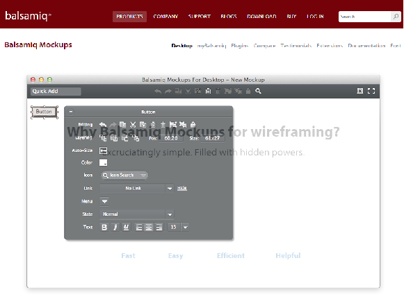

A Software we use to create mock ups of a screen layout, which then needs to get approved by the business before we actually modify a screen layout in our apps. It is somewhat like powerpoint, but has interactive links which when click takes you to a new screen.
